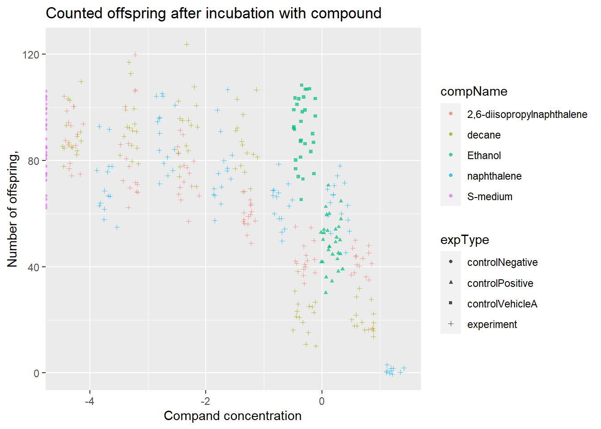
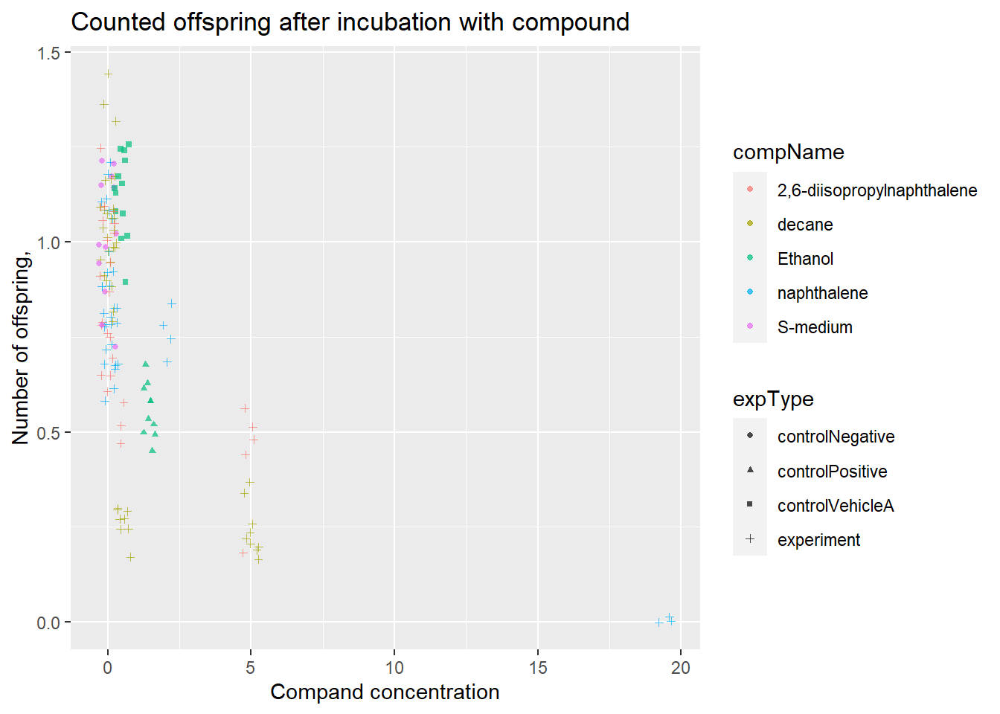
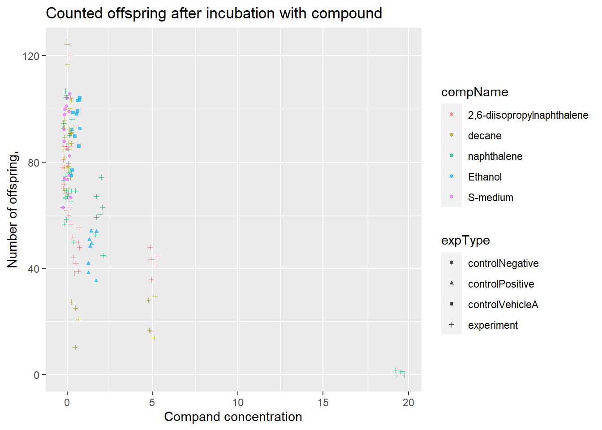
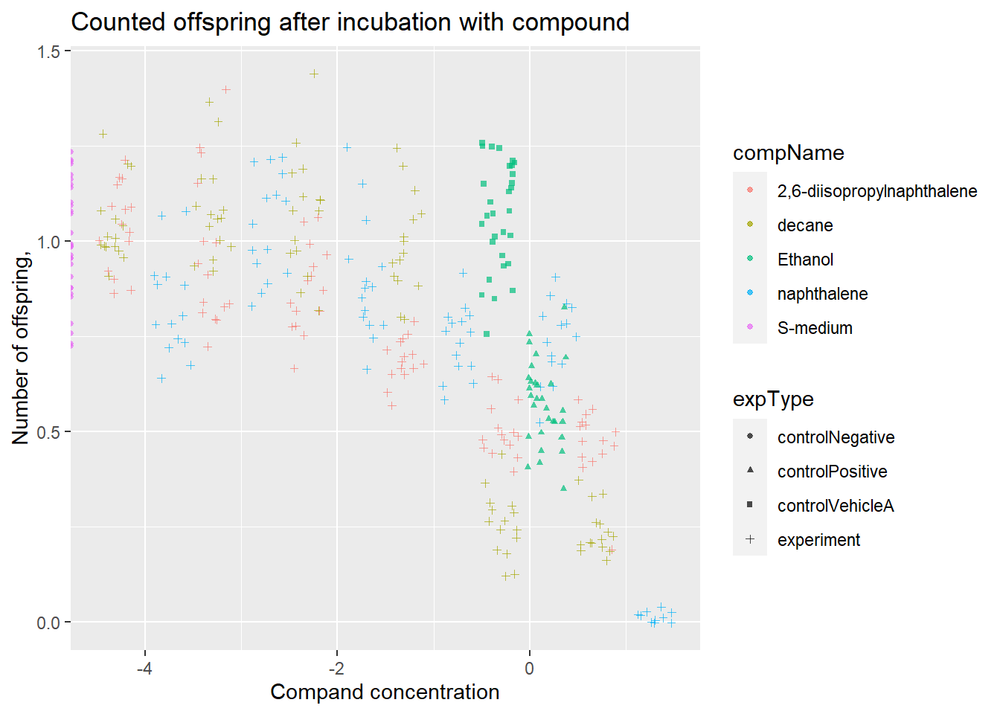

Portfolio of DSFB
1 Portfolio assignment 1.1
A. Review the following Excel file in the ./data/CE.LIQ.FLOW.062_Tidydata.xlsx (it’s here), by opening the file in Excel. See if you can spot anything peculiar about this file. Do not edit the file in any way. Just close it when you are done. (Annoyingly, Excel asks you to save your changes, even if you did not touch anything in the file: why is this cumbersome?)
Colourfull Excel file
it’s bright with unreadable colors. The data is in wide/tidy format and many columns have the same value on each cell of the column.
B. Open the file in R, using the {readxl} package.
ce_data <- read_xlsx(here("1.1_data/CE.LIQ.FLOW.062_Tidydata.xlsx"))No the data types have not been correctly assigned, column compname could have been the data type factor, and compConcentration should be numeric.
D. Create a graph displaying a scatterplot for the CE.LIQ.FLOW.062_Tidydata.xlsx data, for the different compounds and the varying concentrations. Put the compConcentration on the x-axis, the DataRaw counts on the y-axis and assign a colour to each level in compName. Assign a different symbol (shape =) to each level in the expType variable. Try fixing the labels of the x-axis so that we can read them.
ce_data$compConcentration <- as.numeric(ce_data$compConcentration)## Warning: NAs introduced by coercionce_data$compName <- as_factor(ce_data$compName)ce_data %>% slice_sample(prop = 0.40) %>%
ggplot(aes(x = compConcentration, y = RawData)) +
geom_jitter(aes(color = compName, shape = expType), alpha = 0.7, size = 1, width = 0.3) +
labs(x = "Compand concentration",
y = "Number of offspring,",
title = "Counted offspring after incubation with compound")## Warning: Removed 3 rows containing missing values (geom_point).
ce_data %>%
ggplot(aes(x = compConcentration, y = RawData)) +
geom_point(aes(color = compName, shape = expType), alpha = 0.7, size = 1, width = 0.3) +
labs(x = "Compand concentration",
y = "Number of offspring,",
title = "Counted offspring after incubation with compound")## Warning: Ignoring unknown parameters: width## Warning: Removed 6 rows containing missing values (geom_point).
E. When creating the plot under C), what happened with the ordering of the x-axis labels. Explain why this happens. Look at the data-type of the compConcentration column in the data again to find a clue.
ce_data <- read_xlsx(here("1.1_data/CE.LIQ.FLOW.062_Tidydata.xlsx"))
ce_data %>% ggplot(aes(x = compConcentration, y = RawData)) +
geom_jitter(aes(color = compName, shape = expType), alpha = 0.7, size = 1, width = 0.2) +
labs(x = "Compand concentration",
y = "Number of offspring,",
title = "Counted offspring after incubation with compound")## Warning: Removed 5 rows containing missing values (geom_point).
class(ce_data$compConcentration)## [1] "character"The data type of compConcentration is character, this means per concentration value it adds a point on the x-axis. this results in the overplotted mess seen here.
F. Correct the data-type of compConcentration to numeric and than look at the graph again. Use a log10 transformation on the x-axis to get a clear graph. Also, add a bit of jitter to the points in the graph so that points are not overlapping.
ce_data$compConcentration <- as.numeric(ce_data$compConcentration)## Warning: NAs introduced by coercionce_data %>% ggplot(aes(x = log10(compConcentration), y = RawData)) +
geom_jitter(aes(color = compName, shape = expType), alpha = 0.7, size = 1, width = 0.2) +
labs(x = "Compand concentration",
y = "Number of offspring,",
title = "Counted offspring after incubation with compound")## Warning: Removed 6 rows containing missing values (geom_point).
G.H. Fill in: (G) The positive control for this experiments is “ethanol (H) The negative control for this experiment is”S-medium"
Think about how you would analyze this experiment to learn whether there is indeed an effect of different concentrations on offspring count and whether the different compounds have a different curve (IC50). Write down your analysis as a step-wise plan
- I would create dose-response curves based on the data per compound.
- I would calculate P-values to test if the diffrence between concentrations of a compound has a significant effect on the number of offspring. this would first be done by checking for normality (shapiro wilk and/or q-q plots) then doing a Anova or Friedmans.
J. Normalize the data for the controlNegative in such a way that the mean value for controlNegative is exactly equal to 1 and that all other values are expressed as a fraction thereof. Rerun your graphs with the normalized data.
#calculating mean of control negative outside of mutate because mutate doesn't like filter function
CN_mean <- ce_data %>% filter(expType == "controlNegative") %>% select("RawData") %>% colMeans()
normalized_ce_data <- ce_data %>%
mutate(norm_data = RawData/CN_mean)
#checking if it's correct
normalized_ce_data %>% group_by(expType) %>% summarise(m = mean(norm_data, na.rm = T))## # A tibble: 4 x 2
## expType m
## <chr> <dbl>
## 1 controlNegative 1
## 2 controlPositive 0.575
## 3 controlVehicleA 1.07
## 4 experiment 0.763#making first plot
normalized_ce_data %>% slice_sample(prop = 0.40) %>%
ggplot(aes(x = compConcentration, y = norm_data)) +
geom_jitter(aes(color = compName, shape = expType), alpha = 0.7, size = 1, width = 0.3) +
labs(x = "Compand concentration",
y = "Number of offspring,",
title = "Counted offspring after incubation with compound")## Warning: Removed 4 rows containing missing values (geom_point).
#makng the log plot
normalized_ce_data %>% ggplot(aes(x = log10(compConcentration), y = norm_data)) +
geom_jitter(aes(color = compName, shape = expType), alpha = 0.7, size = 1, width = 0.2) +
labs(x = "Compand concentration",
y = "Number of offspring,",
title = "Counted offspring after incubation with compound")## Warning: Removed 6 rows containing missing values (geom_point).
K. Why would you want to take the step under J?
this eliminates natural and extraneous variation between groups. After normalization all groups fall on the same scale of 0 - 1.